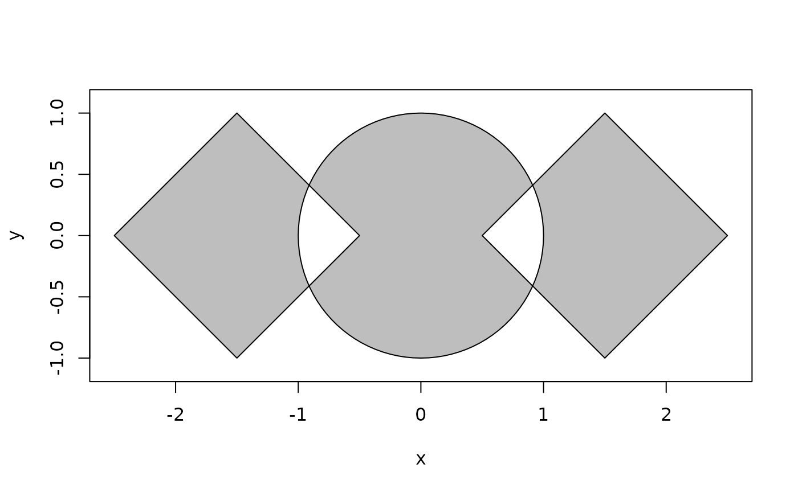
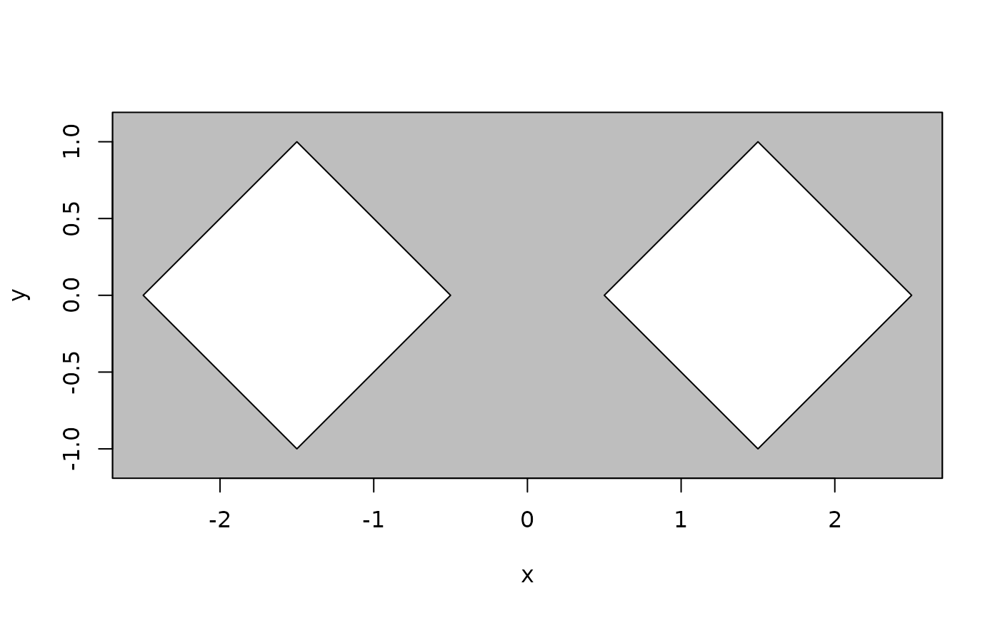
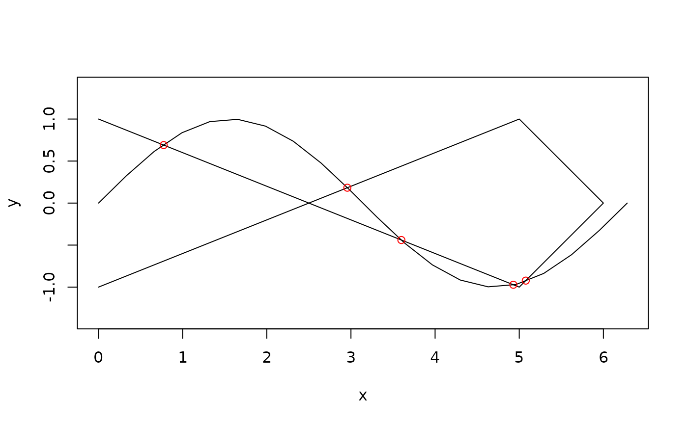
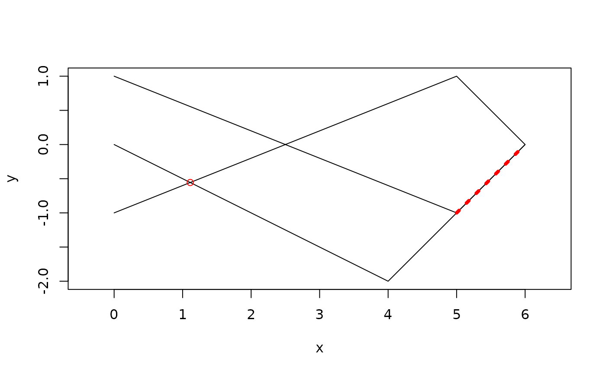
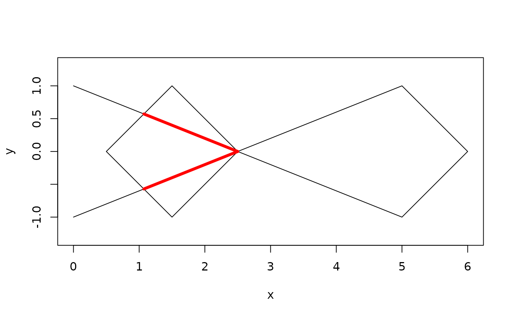

polyclid extents the set of boolean set operations from euclid to work with polylines and polygons or sets of these. As boolean operations has the capacity to produce multiple polygons or poylines from a single one, the output from boolean operations will always be a polygon_set or polyline_set even if the input are polygon or polyline vectors. In fact the polygon and polyline versions of these operations are simple wrappers that converts their input to their respective set versions first.
Operations between polygons
When set operations are performed between polygons and/or polygon sets (or euclid geometries that can be considered polygons: circles, triangles and iso rectangles), the output is always a polygon_set, even if the result is a single polygon. This is done both to ensure a known output type, but also because polygon sets are the internal representation used during boolean operations and returning the native representation is thus more performant.
union()will combine two polygons into one (if they touch or overlaps) or insert them into the same set if they are disjoint.intersection()will return the area where the two inputs are interior joint (overlapping).difference()will remove the overlapping areas from the polygon(s) first given in the first argument.symmetric_difference()will return the areas of the inputs that are not overlapping.complement()returns the inverse of the input, i.e. the areas that were outside of the input polygon(s) will be inside the returned polygon.
If only one argument is given, the cumulative operation is performed on the
input. For union() and intersection() this can be done in a single
aggregate operation whereas for difference() and symmetric_difference()
are done one at a time.
Operations between polylines
Boolean set operations between polylines and/or polyline sets (or segments) will always return polyline sets. These sets can be a mix of polylines and isolated vertices depending on the input.
union()will combine the polylines into a single set. Lines that are meeting at their end points will not be merged, but can be extracted withas_polyline(..., simplify = TRUE). The reason for this is that merging these lines eagerly is bad for performance and will not alter the topology of the set. Further, the set already splits polylines into x monotone parts so there is not a 1-to-1 relationship between polylines and polyline sets either way.intersection()will return the points where the inputs are crossing along with the line segments where they are overlapping.difference()will insert vertices in the first polyline (set) where the inputs are crossing and remove line segments that overlap.symmetric_difference()will return those parts from either input that do not overlap
contrary to polygons, there is not a single argument version for polylines, mainly because the need is not really there.
Operations between polylines and polygons
When doing operations between polygons and polylines the interpretation of what should happen is unclear. The following definitions are therefore mainly what makes sense in the context of this package. The return value is always a polyline set, but depending on the operation, it may be the faces of this set that has interpretational relevance.
union()will combine the polylines and polygons into a single set. Where they overlap the polyline interior to the polygon will be removed as it's point set is covered by that of the polygonintersection()will return the polyline part that lies inside the polygon as that represent the shared point set.difference()if the polyline (set) is the first argument then the parts overlapping the polygon will be removed. If the polygon (set) is the first argument the polygon(s) will be cut by the into two or more by the polyline(s).symmetric_difference()will return the polylines and polygons overlayed into a single polygon set. For many this is what they assume the union to be.
Examples
## Polygons
circ <- as_polygon(circle(euclid::point(0, 0), 1))
rect1 <- polygon(
c(0.5, 1.5, 2.5, 1.5),
c(0, -1, 0, 1)
)
rect2 <- transform(rect1, euclid::affine_translate(vec(-3, 0)))
# Union of disjoint polygons places them in the same set
rects <- union(rect1, rect2)
plot(rects)
# Union of overlapping polygons
plot(union(rects, circ))
# Intersection of disjoint polygons is empty
intersection(rect1, rect2)
#> <2D polyclid_polygon_sets [1]>
#> [1] [empty]
# For overlapping polygons it gives the overlap
plot(intersection(rects, circ))
# Difference cuts out one polygon from the other
plot(difference(rects, circ))
plot(difference(circ, rects))
# and symmetric difference gives the disjoint parts
plot(symmetric_difference(rects, circ), col = 'grey')

# complement flippes it around, turning a bounded polygon into an unbounded
plot(complement(rects), col = "grey")

## Polylines
sine <- polyline(
seq(0, 2*pi, length.out = 20),
sin(seq(0, 2*pi, length.out = 20))
)
loop <- polyline(
c(0, 5, 6, 5, 0),
c(-1, 1, 0, -1, 1)
)
line <- polyline(
c(0, 4, 6),
c(0, -2, 0)
)
# Union combines the two polyline (sets) and splits up lines where they cross
ps <- union(sine, loop)
plot(ps)
euclid_plot(vert(ps))
# Union will both return the isolated vertices of the cross points along with
# any overlapping segments
ps <- intersection(sine, loop)
plot(c(sine, loop))
euclid_plot(vert(ps), col = "red")

ps <- intersection(line, loop)
plot(c(line, loop))
euclid_plot(ps, col = "red", lty = 3, lwd = 4)
euclid_plot(vert(ps)[vert_degree(ps) == 0], col = "red")

# Difference will cut lines at intersection points and remove overlapping
# segments from the first argument
ps <- difference(loop, line)
plot(ps)
euclid_plot(vert(ps))
# Symmetric difference will remove overlapping segments from the union
ps <- symmetric_difference(loop, line)
plot(ps)
euclid_plot(vert(ps))
## Polygons and polylines
# Union merges the two, removing any segments of the polyline interior to the
# polygon
plot(union(sine, circ))
# Intersection returns the part of the polyline interior to the polygon
plot(rect1, xlim = c(0, 6))
euclid_plot(loop)
euclid_plot(intersection(loop, rect1), col = "red", lwd = 4)

# Difference depends on whether the polygon or polyline is the first argument
# subtracting a polygon from a polyline removes the parts of the polyline
# interior to the polygon
plot(difference(loop, rect1))
# subtracting a polyline from a polygon will cut the polygon along the lines
# where the polyline intersects it
plot(difference(rect1, loop))
# Symmetric difference is the union of the two difference results which is
# basically the overlay of the two topologies
plot(symmetric_difference(rect1, loop))